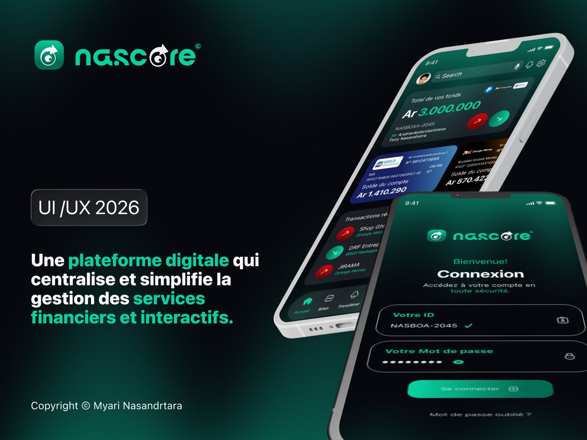
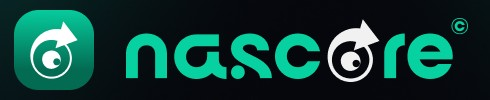
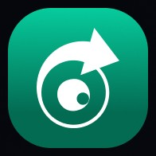
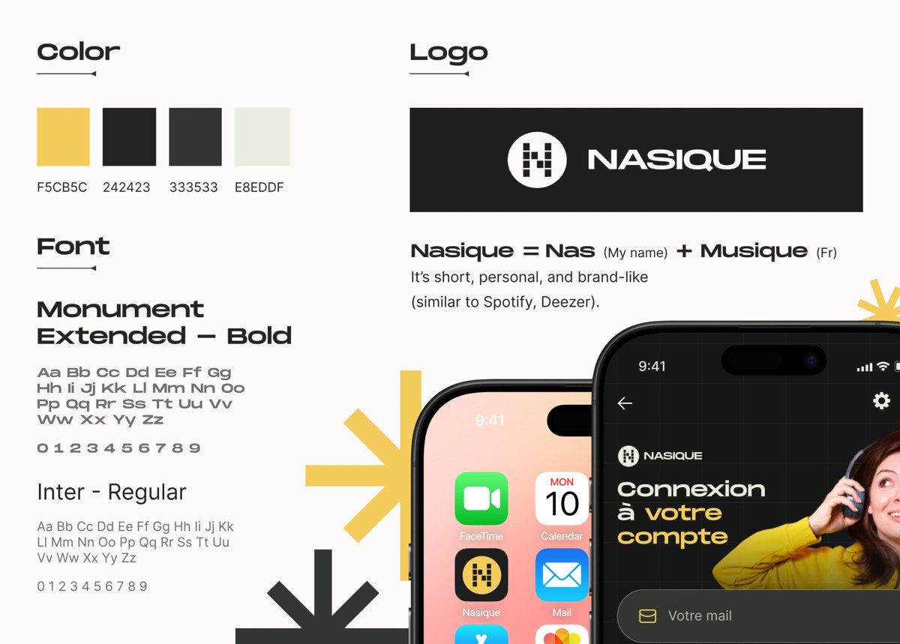

Idéation et vision du produit
- Définition de NasCore (application fintech / wallet)
- Objectifs du produit : gérer son argent sans banque physique
- Fonctionnalités clés : Mobile Money, transferts, paiement de factures, épargne
Une plateforme digitale qui centralise et simplifie la gestion des services financiers et interactifs.

Gérer son argent simplement, sans passer par une banque physique.
NasCore est une application mobile qui permet de gérer son argent grâce à la technologie : Mobile Money, transferts, paiement de factures et épargne, en toute sécurité. Le défi UX : centraliser comptes bancaires et Mobile Money dans une interface claire, sans noyer l'utilisateur sous les chiffres.
Un seul solde, cinq onglets : Accueil, Bilan, Transférer, Épargne, Profil.
L'accueil affiche le total des fonds, banque et Mobile Money réunis, avec une carte par compte et les dernières transactions. Les autres onglets portent chacun une fonction clé : suivre les dépenses, transférer, épargner vers des objectifs.
Un solde unique, des gestes rapides.
Les sorties sont en rouge et les entrées en vert, sur fond sombre, pour lire un montant d'un coup d'œil. Les comptes se parcourent en faisant glisser les cartes, et la barre de cinq onglets garde les quatre fonctions clés à un geste.


Projet personnel · Recherche UX, interface, prototype

UI/UX Design · Site vitrine · Identité
Parlons de votre application, de votre interface ou de votre identité.